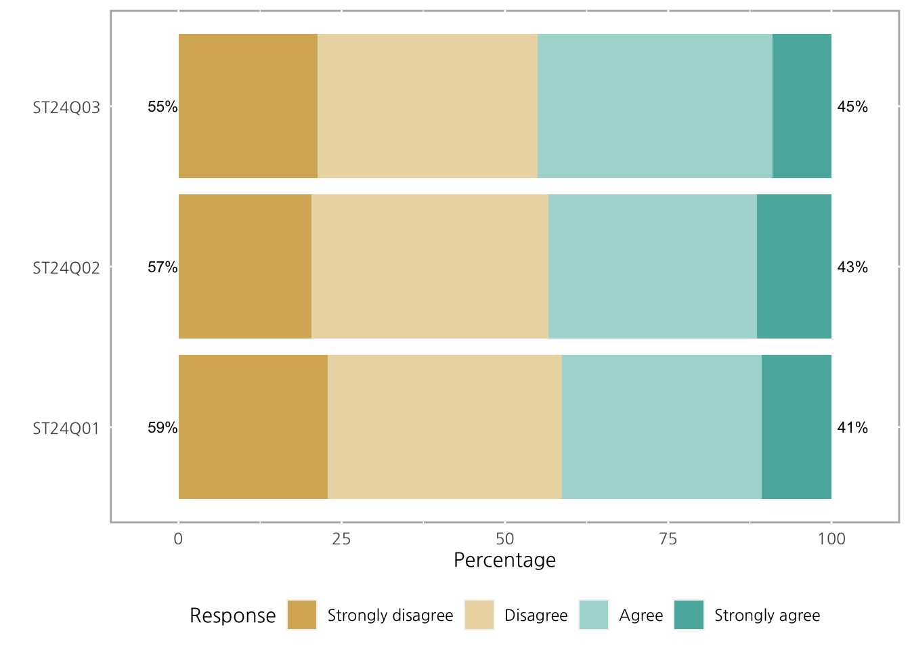
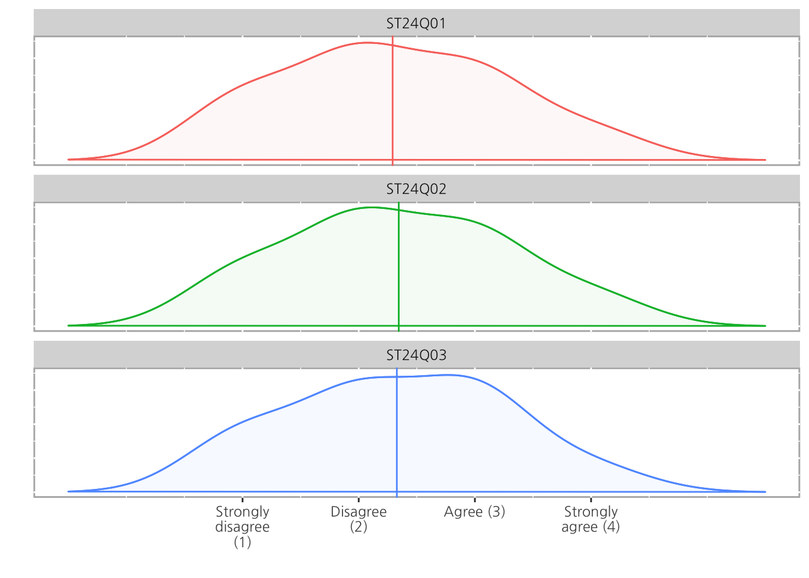
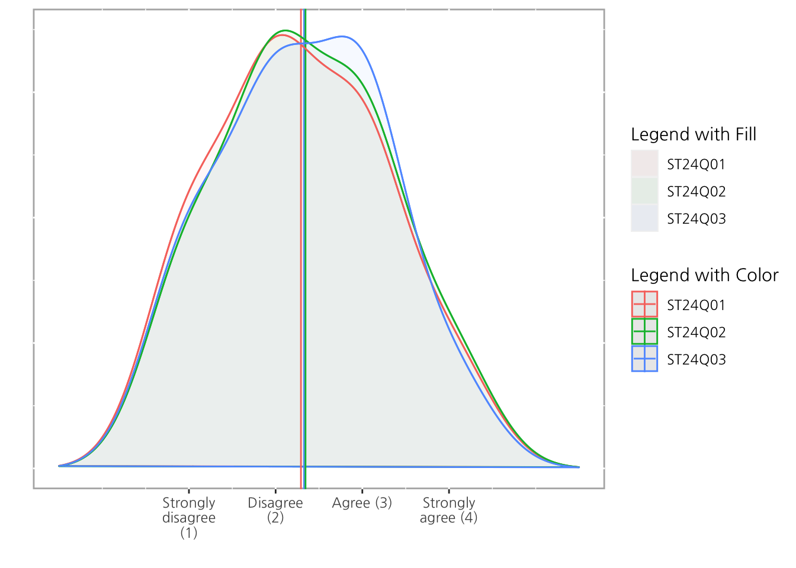
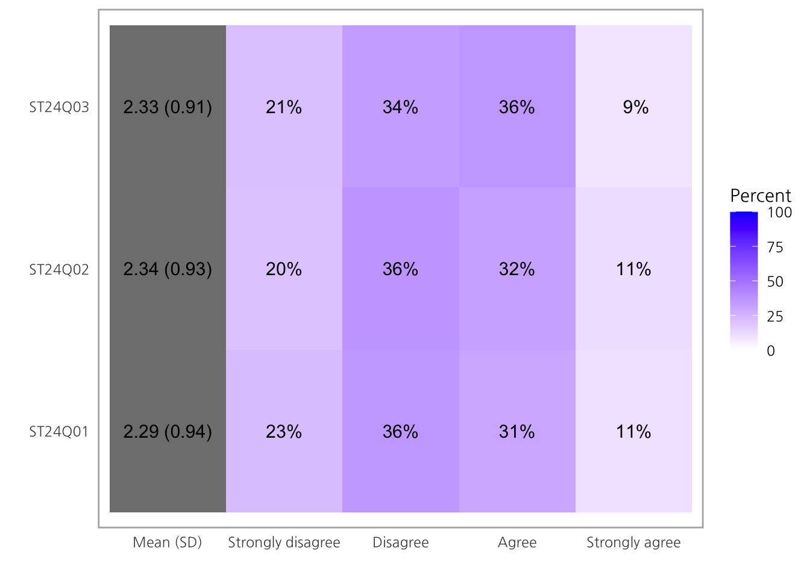
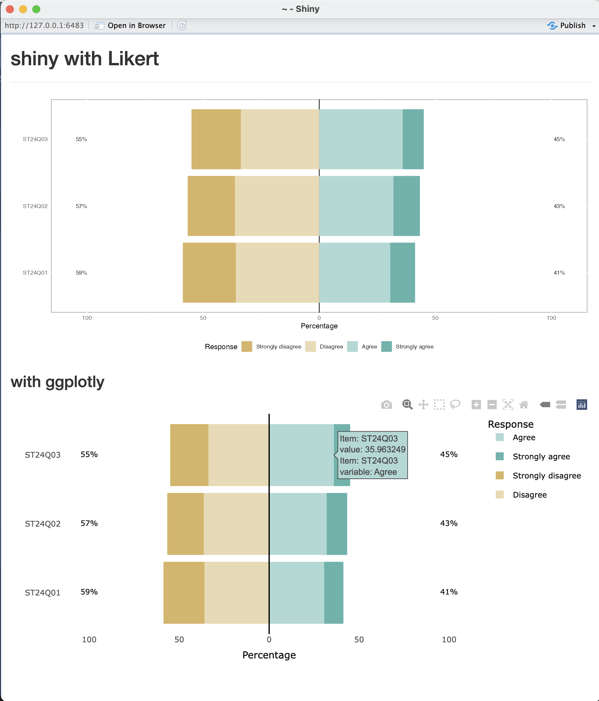

리커트 척도
사용자로 부터 수집되는 데이터중 많은 부분은 설문조사를 통해 얻을 수 있으며, 제시된 문장에 얼마나 동의하는지의 단계를 나타내는 표현하는 방법으로 리커트 척도 라는 방법이 쓰이기도 합니다.
하나의 예시를 들면 다음과 같습니다.
이 설문을 10명에게 진행했고, 그 결과가 다음 테이블과 같다고 가정해보겠습니다.
이렇게 순서가 있는, 여러 카테고리의 데이터를 어떻게 시각화 할 수 있을까요? (Likert 외에도 NPS도 해당합니다.)
Barplot
제일 먼저 해볼 수 있는 것은, 문항별로 개수를 보여주는 것입니다.

이 방법 자체는 나쁘지는 않지만, 1개가 아닌 여러개 문항의 결과를 보여줘야 한다면 아쉬운 문제점이 생깁니다.
Stacked Bar plot
다음과 같이 데이터를 세줄 더 추가해보겠습니다.
이 여러개의 데이터를 표기 하는 방법은 문항을 하나의 축 (x)에, 그리고 문항의 결과들을 나머지 축(y)을 활용하여 그려야 하기 때문에 “stacked bar”를 활용하는 방법이 있습니다.

Image from The Data Visualisation Catalogue

문항별로 응답자 수는 같기 때문에 (NA는 고려하지 않습니다) 전부 높이가 동일한 결과가 나오게 됩니다.
그런데 주의해야할 점으로는, 당연하게도 문항에 따라 분포가 다를 수 있습니다. “한쪽으로 몰리는” 답이 나오는 경우가 있을 수 있다는 의미입니다.
위의 그림에서 보통이다는 동일하게 각각 1개씩 답변이 있음에도 불구하고 도움이됨의 위치는 높게 되어있어 시각적 비교에 혼선을 줄 수 있습니다.
이를 위해서 아래 이미지처럼 Neutral(회색)의 위치를 고정시키고, 이를 기준으로 위 아래로 Positive / Negative를 붙여 표현하는 방법을 고려할 수 있습니다.

Image from daydreamingnumbers
이러한 차트의 정확한 이름은 모르겠지만, 이 글에서는 편의상 Likert chart라 표현하겠습니다.
Likert chart with R
이번 글에서 소개할 패키지는 이 Likert chart를 그릴 수 있게 하는 패키지 입니다.

https://github.com/jbryer/likert
예시 데이터
시각화 패키지의 특성상 사용자의 데이터의 형태와 패키지가 요구하는 형태가 다를 수 있어, likert 패키지에서는 활용할 수 있는 예시데이터를 제공합니다.
Attaching package: 'likert'The following object is masked from 'package:dplyr':
recode CNT ST24Q01 ST24Q02
68038 Canada Disagree Strongly agree
68039 Canada Agree Strongly disagree
68040 Canada Strongly agree Strongly disagree
68041 Canada Disagree Disagree
68042 Canada Strongly disagree Disagree
68043 Canada Agree Strongly disagree# str(pisaitems)
# View(pisaitems)pisaitems 데이터의 경우, - rownames를 가지고 있으며 - 첫 CNT 이후로는 전부 scale을 갖는 factor의 형태로 이루어져 있습니다. - 개수는 각 column 마다 다르며, NA를 포함하고 있기도 합니다. (ex: ST36Q01)
이후 이 데이터를 likert 오브젝트로 변환해야 합니다. 다만 모든 데이터를 다 사용하진 않고, CNT 이후의 처음 3개만 사용하겠습니다.
likert: print
summary(pisaitems[, 2:4]) ST24Q01 ST24Q02 ST24Q03
Strongly disagree:14947 Strongly disagree:13323 Strongly disagree:13900
Disagree :23515 Disagree :23811 Disagree :22072
Agree :20000 Agree :20935 Agree :23525
Strongly agree : 7029 Strongly agree : 7487 Strongly agree : 5917
NA's : 1199 NA's : 1134 NA's : 1276 100 * 14947 / (14947 + 23515 + 20000 + 7029) # ST24Q01: Strongly disagree [1] 22.82298 Item Strongly disagree Disagree Agree Strongly agree
1 ST24Q01 22.82298 35.90570 30.53855 10.732772
2 ST24Q02 20.32308 36.32162 31.93453 11.420770
3 ST24Q03 21.24927 33.74201 35.96325 9.045464위의 summary와 바로 비교해보면 알 수 있듯, likert 를 출력했을때는 NA를 제외한 각 문항별 factor의 백분율을 출력합니다.
likert: summary
한편 summary 함수를 사용하면 low와 high를 표기해주는데 이는 각각 Neutral보다 낮은 / 높은 값의 백분율 합을 표기합니다. (예시의 경우 Strongly disagree + Disagree, Strongly agree + agree)
summary(ll) Item low neutral high mean sd
3 ST24Q03 54.99129 0 45.00871 2.328049 0.9090326
2 ST24Q02 56.64470 0 43.35530 2.344530 0.9277495
1 ST24Q01 58.72868 0 41.27132 2.291811 0.936902322.82298 + 35.90570 # ST24Q01's Low[1] 58.72868- 물론 문항이 4-5개가 아닌, 여러개도 가능하기 때문에 Neutral은 가운데를 기준으로 설정하지만, 사용자가
center를 통해 지정할 수도 있습니다. -
mean과sd는 크게 신경쓰지 않아도 괜찮습니다.
summary(ll, center = 1.5) Item low neutral high mean sd
2 ST24Q02 20.32308 0 79.67692 2.344530 0.9277495
3 ST24Q03 21.24927 0 78.75073 2.328049 0.9090326
1 ST24Q01 22.82298 0 77.17702 2.291811 0.9369023liert: Plot
likert object는 그냥 plot에 넣는 것으로도 결과를 바로 만들어 낼 수 있습니다.
plot(ll)
기본 center는 가운데, 이 경우 2와 3사이인 2.5를 기준으로 그려지고, 문항별 High, Low를 차트 양옆에 추가로 표기하게 됩니다.
information
차트에서의 factor 별 %, high, low 는 plot.percents, plot.percent.low, plot.percent.high를 통해 설정할 수 있습니다.
plot(ll, plot.percents=TRUE, plot.percent.low=FALSE, plot.percent.high=FALSE)
colors
기본 색상외에 colors를 사용하여 색상을 커스텀 할 수 있습니다. 단, 개수는 factor의 수와 동일해야합니다.

center
만약 위의 summary 처럼 Neutral을 바꾸고 싶다면, center를 통해 값을 지정하여 그릴 수 있습니다.
여기서 center가 정수라면 해당하는 factor의 색상이 자동으로 회색으로 바뀌는 것을 확인 할 수 있습니다.
plot(ll, center = 2)
include.center
차트에서 Neutral을 제외하고 그리고 싶다면 include.center = FALSE를 사용하여 제거할 수 있습니다.
plot(ll, center = 2, include.center = FALSE)
centered
단순히 stacked bar chart를 그리고 싶다면 centered = FALSE를 사용하면 됩니다.
plot(ll, centered = FALSE)
NA info (histogram)
문항에서 결측치 (NA) 정보를 같이 표현하고 싶은 경우, include.histogram = TRUE를 설정하여 그릴 수 있습니다.
density plot
likert 오브젝트는 type = 'density'를 사용하여 bar chart의 형태가 아닌 density plot으로도 표현할 수 있습니다.
plot(ll, type = 'density')
여러개의 density plot을 facet을 사용하여 하나로 겹치게 보여줄 수 있으며, 추가로 legend를 지정하는 예시입니다. (구분은 잘 안가지만, fill의 색상은 미세하게 다르게 표현되어 있습니다)
plot(ll, type='density', facet=FALSE) +
guides(
color = guide_legend(title="Legend with Color"),
fill = guide_legend(title="Legend with Fill")
)
Heat map
likert 오브젝트는 type = 'heat'를 사용해 heatmap으로 도 표현할 수 있습니다.
plot(ll, type='heat')
Group Likert
한편 likert 오브젝트를 만들때, 사용자의 그룹을 설정해준다면 (예시데이터의 CNT와 같이) dplyr의 group by를 사용한 것과 유사한 결과를 낼 수 있습니다.
사용 가능한 parameter는 위와 동일합니다.
Group Item Strongly disagree Disagree Agree Strongly agree
1 Canada ST24Q01 25.69810 35.12856 24.88383 14.289507
2 Canada ST24Q02 26.77758 35.18871 24.63608 13.397637
3 Canada ST24Q03 25.22917 31.68150 33.47062 9.618706
4 Mexico ST24Q01 21.87500 36.76845 33.45526 7.901293
5 Mexico ST24Q02 15.26451 36.42523 37.79077 10.519491
6 Mexico ST24Q03 18.44410 34.78607 37.89150 8.878331
7 United States ST24Q01 17.16996 33.00426 33.97213 15.853659
8 United States ST24Q02 29.08282 40.51858 21.03328 9.365325
9 United States ST24Q03 24.31646 35.13671 32.79038 7.756448
Group horizontal Plot
그룹을 사용하면 차트를 여러개의 그룹에 따라 구분지어 그려야 하는 만큼 ggplot의 facet처럼 차트를 나누어야 하는데, 이 과정에서 위아래가 아닌, 좌우로도 설정 할 수 있습니다.
plot(llg, panel.arrange='h', wrap=20)
Likert chart with Shiny
likert는 이 아티클의 예시와 같은 1회성 코드, 혹은 이를 작성한 quarto와 같은 문서에서도 활용할 수 있지만 shiny를 통해서 다른 사람들에게 웹으로 공유할 수 있습니다.
단, shinyapps.io를 활용하여 배포 하지 않고서는 quarto 아티클에 shiny를 심는 것은 기술적으로 불가능 하기 때문에 shiny는 코드와 결과 이미지를 활용합니다.
위 코드를 사용한 shiny app의 결과는 다음과 같습니다.

Likert chart with ggplotly
ggplotly는 ggplot과 같은 R에서 그린 그림을 plotly 패키지와 연동하여, 이미지를 정적인 이미지에서 동적인 이미지로 바꾸는 역할을 하는 함수입니다. 이를 통해 hover, download, zoom 등의 액션을 사용자가 추가로 할 수 있어 shiny나 rmarkdown 등의 interactive document에서는 종종 활용하기도 합니다.
likert 패키지 또한 마찬가지로 ggplotly를 통해서 정적인 이미지를 동적으로 바꿔줄 수 있습니다.
ggplotly는 shiny로도 동시에 연동이 가능합니다.
ui <- fluidPage(
h2('shiny with Likert'),
hr(),
plotOutput(outputId = 'myLikert'),
h3("with ggplotly"),
plotlyOutput(outputId = 'myLikert2')
)
server <- function(input, output, session) {
data(pisaitems)
ll <- likert(pisaitems[, 2:4])
output$myLikert = renderPlot({
plot(ll)
})
output$myLikert2 = renderPlotly({
ggplotly(
plot(ll)
)
})
}
shinyApp(ui, server)위 코드의 실행결과는 다음과 같습니다.

정리
- 만족도 설문조사 등에서 많이 활용되는 “순서가 있는 카테고리형” 답안을 표현하는 것은 다른 시각화와 살짝 결이 다르다.
-
likert패키지를 활용하여 likert chart를 그릴 수 있다. - density plot, heatmap 등도 같이 활용 가능하며,
center를 포함한 옵션을 설정할 수 있다. -
group을 할당하여 구분 짓는 것도 가능하다. -
shiny,quarto,plotly등 다른 패키지와도 연동이 가능하다.
라이센스
인용
BibTeX 인용:
@online{kim2023,
author = {jinhwan kim},
title = {likert 패키지 소개},
date = {2023-02-05},
url = {https://blog.zarathu.com/posts/2023-02-05-likert},
langid = {kr}
}
인용방법
jinhwan kim. 2023. “likert 패키지 소개.” February 5, 2023.
https://blog.zarathu.com/posts/2023-02-05-likert.